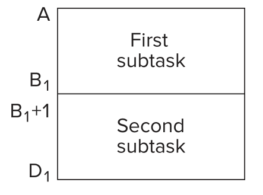
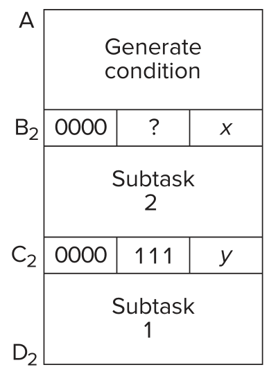
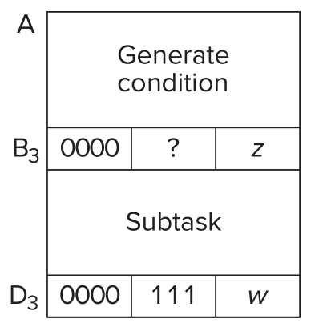

结构化编程
它起源于20世纪50年代，Edsger W. Dijkstra在1968年正式确立此概念。结构化编程改进了“过程式编程”，它主张使用系统分解的方法解决问题。
系统分解
一个任务视为一个工作单元。本方法将任务分解成多个子工作单元，而它们的集合功能与父工作单元一致。
任务分解后，子任务仍然过于复杂，那么继续分解，直到小模块可用程序描叙。此乃逐步求精。
基础结构
任务的分解遵照以下逻辑：
- 顺序：将任务分解成两个有序的子任务。
- 条件：将任务分解成两个时序互斥的子任务，执行何者视条件而定。
- 迭代：循环执行子任务。
它们都是二元操作，因此多元化与嵌套是合理的。
任务的入口与出口分别只有一个。
用LC-3构造基础逻辑
顺序

非常简单，执行指令绝不回头。
条件

针对某项操作，在BR之前执行其指令，留下条件码。B2处为条件指令。若条件满足，则PC偏移到C2 + 1；否则，PC不变，.即将执行与Subtask 1时序互斥的Subtask 2。C2处为无条件分支，直接令PC偏移到D2 + 1，终结整个逻辑。
迭代

先留下条件码，让B3处的条件指令核对。若条件满足，则PC偏移到D3 + 1，终结整个逻辑；否则，PC不变，即将执行循环体。D3处为无条件分支，负责拉PC回到循环条件处。
编程心得
刚接手一段代码就想彻底搞懂，多数时候并不可能。
你可以试着截取一部分代码，从此开始探索。
问题起初是模糊的，随着分析愈加明朗。一旦你弄明白任务所需、所供，以及如何展开，就可以去系统分解其它任务了。
调试
软件开发过程中，调试往往比设计和施工花更长时间。
当程序出现逻辑谬误时，可通过回溯追踪它。跟随指令执行流，比较实际结果与应然结果，即可识别出逻辑谬误所在。
回溯调试
回溯调试的模拟器必须具备以下功能：
- 写入某些值到内存和寄存器
- 执行一系列指令
- 指定情况下暂停执行
- 观察内存和寄存器内的值
设定值
截取一部分代码进行调试，须消除先前代码的影响。因此，应该假设正确用例，保证调试环境正常。
实践中，是将值写入待用的寄存器。
执行流
模拟器必须拥有以下控制执行流的命令：
- Run：执行程序，遇到HALT指令或断点才停下。
- Step：步进，一次执行定量指令。默认一次一条，即所谓的单步。
- Set Breakpoint：模拟器维护着一份断点地址列表。在指令的FETCH阶段，模拟器会用PC的值查表，若查找命中，则停止执行流。
- Clear Breakpoint：清除某处断点。
显示值
执行中止就是观察内存或寄存器的时机。
边界情况
对于合乎逻辑的输入集合，若程序只能正确处理一部分，则剩余部分称为边界情况。修复边界情况bug，是调试中最难的问题。
任其崩溃
理想的调试：首次遇到bug诱因，bug便浮现。
良好的设计，应该能在漏洞潜伏的情况下，让bug尽早出现，且声势要大，比如直接崩溃。